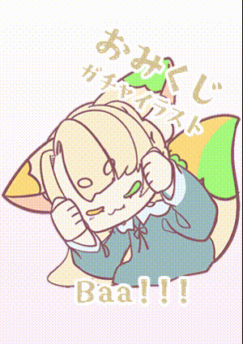

TOPおみくじ企画の記録
TWITCH CP-OMIKUJIおみくじ企画の記録
元ページの企画概要と利用条件を記録しています。開催案内は2026年4月後半〜5月のもの、特典は2026年5月時点の内容です。現在の開催状況は、配信やお知らせでご確認ください。

配信活動等のサンプル制作にご協力いただける方を募集する、コミュニティ企画です！
開催スケジュール
年4シーズン開催（余力があれば！）：1〜2月／4〜5月／7〜8月／10〜11月
（※3・6・9・12月はお預かりしたデザインの制作集中期間としてお休みをいただきます）
おみくじ概要
- 引き換えは1配信あたり1人3回まで
- 大当たりが出ると、現在制作中のガチャ絵（サンプルイラストのモデルとして）イラストを制作・プレゼントさせていただきます。
限定・応援特典
2026年5月時点
- サブスク：ちょっと運が良くなるかも…？？
- ラスト1週間：おみくじの回数制限が解放
- レイドをいただいた際：レイドをいただいてから10分間、先着1名様限定の「高確率おみくじ（50％）」が発生します！レイドしてくれたご本人様、ぜひ優先してお引きください。※こちらの高確率おみくじによる制作は、通常のサンプル募集数には含まれません。
優先枠
いつも配信活動を支えてくださり、本当にありがとうございます！
【Tier 2 / Tier 3 サブスク】または【当月にサブギフ5件以上】で応援してくださっている方には、日頃の感謝を込めまして、おみくじの結果に関わらず優先的にサンプルモデル（ファンアート制作枠）として選出させていただきます。
※こちらの優先枠は別カウントでの制作となるため、通常の抽選枠（募集サンプル数）を圧迫することはございません。
※優先枠をご利用の方は、毎回Discordサーバー内での申請（資料提出）が必要となりますので、お忘れなきようお願いいたします。
ご注意
不可
- AI生成使用立ち絵ご使用の方
- 版権（二次創作、ご自身以外の活動者様、他、ご自身が権利を有していないデザイン）
- 実写写真 ※配信活動上で実写の方は可
- イラストそのもの、イラストの作成権利譲渡
- 商用利用、SNSへの無加工原寸大投稿、自作発言、有償無償問わず配布全般
- アスペクト比の変更
無効
- 立ち絵・OCのいない方の当選
※次回開催までに作成される予定の方は持ち越し可（持ち越しは1期分のみ） - 「あたらない」「あたりはいってない」など疑うような発言をした方
可
- 告知画像・おはつい等へ、他素材と組み合わせての公開（単体での掲載は不可）
- ご自身のDiscordサーバーへのFA窓などへの投稿（単体でOKです）
- Discordサーバー、Twitch、YouTubeへのスタンプ登録（他サイト不可）
- 告知画像等へのご使用の際の色調補正（あくまで告知画像の雰囲気に合わせる形での調整）